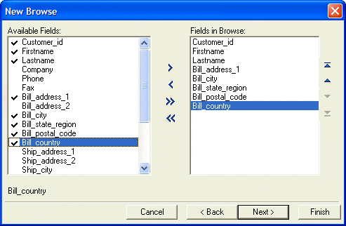
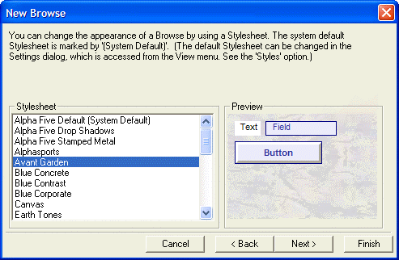

Using the New Browse Genie
When you create a new browse layout, the New Browse genie lets you select which columns you want to place in the browse layout and apply a stylesheet to the browse.
To create a new browse:
In the Control Panel, click the Browses tab, and click the New button.
Select a data source for the new browse (a table or set).
Select each field that you want to display on the column in the Available Fields list and click
 to add it to the Fields
in Column list. Click
to add it to the Fields
in Column list. Click  to add all fields to the
form.
to add all fields to the
form.Select each field that you want to remove from the column in the Fields in Column list and click
 . Click
. Click  to remove all fields from the column.
to remove all fields from the column.Use the
 ,
,  ,
,  , and
, and  buttons
to reorganize the fields within a column.
buttons
to reorganize the fields within a column.

Click Next >.
Select a style from the Stylesheet list. The Preview window shows the appearance of a label, data field, button, and the form's background.

Click Next >.
Optionally, click View Xbasic to see the Xbasic code for the browse.
Click Finish.
See Also
Supported By
Alpha Five Version 5 and Above